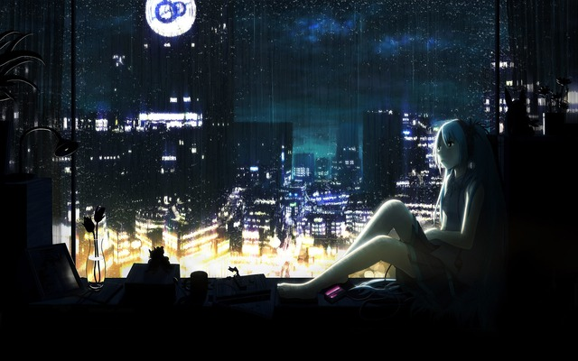

Aquamarine: 1

Жанр: записи (проза)
О произведении: Никто не звонит, не пишет...
Никто не звонит, не пишет.
Все медленно превращается в грязную, затягивающую утопию...
...тонуть...
Только гудение поезда в темной и далекой ночи заставляет замирать это меланхоличное сердце.
Что мне кажется? То ли это руки, торчащие из черной бездны, или рты, зашитые платиновыми нитками?
Все безумно серо, скучно, и уныло.
Ища какое-либо утешение, находишь милостыню только в виде из окна, который до некоторых пор казался неудержимо далеким.
Вот так все и получается. Мелькают люди. Но они надолго не задерживаются, все проходят мимо, куда-то еще.
А трясина продолжает манить вниз.